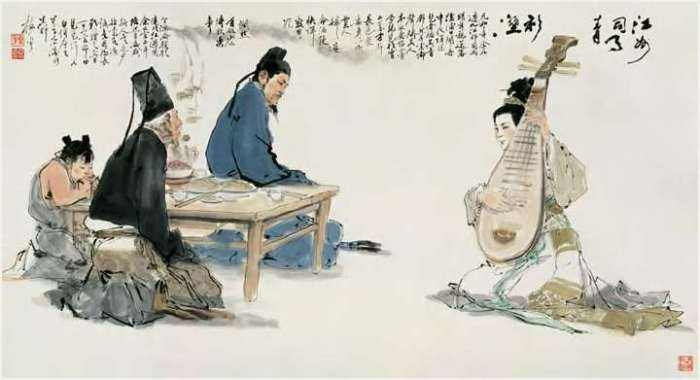

About Bai Juyi
Poetry is art worth translating. “Pipa Xing,” also known as “Song of the Pipa,” is a celebrated poem by the eminent Tang dynasty poet Bai Juyi, who lived from 772 to 846. Bai Juyi's poetry is renowned for its clarity, emotive depth, and social consciousness. The poem, written in classical Chinese, captures a poignant moment when the poet encounters the melancholic sound of a pipa, a traditional Chinese lute-like instrument, played by a woman at night. This encounter evokes profound feelings of nostalgia and sorrow, mirroring the poet's own sense of displacement and exile.
The original text of “Pipa Xing” is a masterpiece of classical Chinese literature, distinguished by its imagery and emotional resonance. Pipa Xing is a clear example of Tang Dynasty poetry. Emma Baldwin, a scholar of Tang Dynasty poetry, states that Tang Dynasty poetry is known for speaking about loss, friendship, nostalgia, and joys, as well as containing descriptions of nature. For example, the moonlight, twilight, empty woods, the heavens, wild peaks, and more (Baldwin). For example, Pipa Xing contains lines like "with the moonlight pervading the river," "the cold river and autumn moon," and "Night falls, she suddenly dreamt of her youth." The Classical Chinese language, known for its rich history and profound influence on East Asian cultures, is characterized by its unique structure, literary depth, and cultural significance. As highlighted in Hongwei Ye's essay, Classical Chinese poetry serves as a concentrated reflection of traditional Chinese culture, offering insights into the historical, social, and philosophical contexts of ancient China. The languag presents significant challenges for translation, particularly in conveying the depth of cultural connotations and poetic nuances. Words and phrases in Classical Chinese often carry multiple layers of meaning, embedded with allusions to folklore, historical events, and philosophical concepts, which are not easily replicated in other languages. For instance, terms like "明月" (bright moon) evoke a sense of homesickness, while "杨柳依依" (willows swaying gently) symbolize parting and sorrow. Translating these elements requires a deep understanding of both the source and target cultures to maintain the integrity and beauty of the original text. The practice of foreignization in translation, as discussed by Ye, aims to preserve these cultural elements, allowing Western readers to appreciate Classical Chinese works. Recognizing the differences between classical Chinese and modern English, I made deliberate choices to convey the poem’s essence in a way that is accessible to contemporary readers. This included adapting cultural references and idiomatic expressions to retain their impact while ensuring they are understandable to an English-speaking audience. For example, a word-by-word translation of the line 千呼万唤始出来 becomes thousand-call-ten thousand-invite-begin-come-out. In classical Chinese, a thousand calls and ten thousand invites is an idiom for a whole lot of invites, not actually a thousand calls and ten thousand invites. Knowing that, our group decided to translate that line as “With invites after invites she finally came out,” in order to connect with a western audience who wouldn’t know the real meaning behind “a thousand calls and ten thousand invites.” Another example of this is with the line 往往取酒还独倾, which translates into often-take-wine-still-alone-pour. Here, the idiom is that when you pour wine alone, it just means that you have no company around you. As a result, we translated that line into “I viewed with no one as company.” While translating the poem’s content, I also sought to preserve its poetic form. This involved maintaining the rhythm, imagery, and lyrical qualities that make “Pipa Xing” a powerful and evocative piece of literature. The theoretical frameworks provided by Walter Benjamin and Martin Luther were instrumental in shaping my approach to translation. Benjamin’s notion of the “pure language” of translation, where the translator seeks to reveal the underlying truth of the original text, guided my efforts to remain true to the poem’s essence. This influenced my decision to retain the original’s emotional depth and cultural references, even when they posed challenges for direct translation.
In approaching the translation of “Pipa Xing,” I was guided by the insights of Walter Benjamin and Martin Luther. Walter Benjamin, in his essay “The Task of the Translator,” emphasizes the importance of preserving the original text's meaning and context while also allowing the translation to stand as an independent work of art. Benjamin stressed about how a translator’s work should capture the essence of the original author. Specifically, Benjamin stated “The task of the translator consists in finding that intended effect [Intention] upon the language into which he is translating which produces in it the echo of the original” (Benjamin 76). Here, Benjamin emphasizes the need to produce an “echo of the original,” in which you preserve the intention from the original and input it into the translation. Benjamin’s concept of the “afterlife” of a text, where the translation breathes new life into the original, guided my approach to maintaining the poem’s lyrical quality and emotional depth. Martin Luther’s perspective on translation, particularly his focus on making his translations meaningful to a different audience, also influenced my approach. Luther advocated for a translation that speaks directly to its readers in their own language, a principle I sought to uphold by striving for clarity and emotional resonance in my translation of “Pipa Xing.” Luther states, “It is fact that the letters s-o-l-a are not there. And these blockheads stare at them like cows at a new gate, while at the same time they do not recognize that it conveys the sense of the text -- if the translation is to be clear and vigorous [klar und gewaltiglich], it belongs there.” Here he is saying that yes, he inserted a new word into his translation of the Bible into German, but he defends doing so by emphasizing that his choice was necessary to convey the true meaning and power of the original text. Luther’s insistence on clarity and vigor in translation is a reminder that fidelity to the source material sometimes requires creative liberties to ensure that the essence of the original is fully communicated.
We translated "Pipa Xing" in a sense-for-sense way because it allowed us to maintain integrity to the original author’s intentions. Maintaining integrity to Bai Juyi’s poem is significant for this text because doing so allowed us to keep a similar structure and rhyme scheme to his, which is integral in the original poem. The original poem had many rhymes, and translating it word-for-word would eradicate such rhymes, losing the lyrical quality that Bai Juyi created. Additionally, each line of Bai Juyi’s poem had exactly seven characters. While we utilized some leniency, we aimed to preserve this structural characteristic by keeping our translated poem to seven to nine total words per line. This approach not only retained the poem’s structure but also respected the nature of the Classical Chinese language. By prioritizing a sense-for-sense translation, we ensured that the emotional resonance, cultural references, and aesthetic qualities of Bai Juyi’s work were conveyed to the readers, allowing them to experience the poem’s original impact and beauty.
